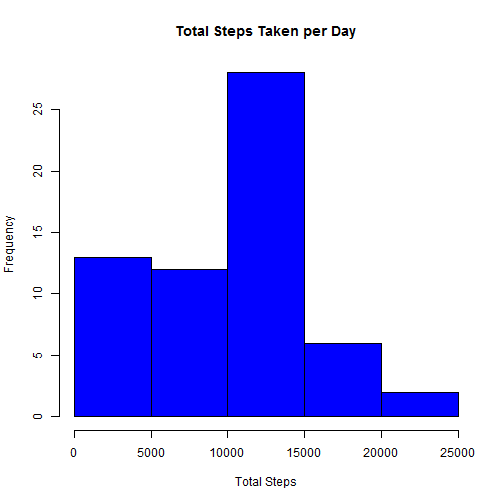

First, set the working directory for the project and load all necessary libraries
library("plyr")
library("reshape2")
library("datasets")
library("ggplot2")
1. Check if the source file already exists, if not, download/unzip dataset
fileName <- "activity.csv"
if (!file.exists(fileName)) {
url1<- "https://d396qusza40orc.cloudfront.net/repdata%2Fdata%2Factivity.zip"
download.file(url1,"./repdata_data_activity")
unzip("./repdata_data_activity")
}
2. Load the dataset and process the data infor a format suitable for analysis
activity <- read.csv(fileName, colClasses=c("numeric","Date", "character"))
1. Create dataframe by summarizing total steps by day
daily_tot_steps <- ddply(activity, .(date), summarize, sum(steps, na.rm = TRUE))
colnames(daily_tot_steps) <- c("date", "total_steps")
2. Plot histogram of the total number of steps taken each day
hist(daily_tot_steps$total_steps, main="Total Steps Taken per Day", col="blue",
xlab="Total Steps", plot = TRUE)

3. Calculate the Mean and Median total number of steps taken per day
mean_total_per_day <- mean(daily_tot_steps$total_steps, na.rm=TRUE)
mean_total_per_day
## [1] 9354.23
median_total_per_day <- median(daily_tot_steps$total_steps, na.rm=TRUE)
median_total_per_day
## [1] 10395
1. Calculate total, mean, and median by date
daily_sum <- ddply(activity, .(date), function(x)
c(daily_total=sum(x$steps,na.rm=TRUE),
daily_mean=mean(x$steps, na.rm=TRUE),
daily_median=median(x$steps, na.rm=TRUE)))
2. Calculate total, mean, and median by interval across all days
interval_sum <- ddply(activity, .(interval), function(x)
c(interval_total=sum(x$steps,na.rm=TRUE),
interval_mean=mean(x$steps, na.rm=TRUE),
interval_median=median(x$steps, na.rm=TRUE)))
order_interval_sum <- interval_sum[order(as.numeric(interval_sum[,1]), decreasing=FALSE),]
max_interval <- head(interval_sum[order(as.numeric(interval_sum[,2]), decreasing=TRUE), ], 1)
max_interval
## interval interval_total interval_mean interval_median
## 272 835 10927 206.1698 19
3. Time series plot of 5-minute interval (x) and the average number of steps taken
with(order_interval_sum, plot(interval, interval_mean, main="Average number of steps taken at each interval",
type="l", col="black", xlab="Interval", ylab="Average Steps Taken"))
1. count the number of missing values the dataset
ms <- which(is.na(activity$steps))
nm <- length(ms)
2. Create dataset with the missing steps value filled in with the mean of each interval across all days
activity_clean <- transform(activity,
steps = ifelse(is.na(steps),
ave(steps, interval, FUN = function(x) mean(x, na.rm = TRUE)),
steps))
nrow(activity_clean)
## [1] 17568
3. Create dataframe by summarizing total steps by day
new_daily_total <- ddply(activity_clean, .(date), summarize, sum(steps, na.rm = FALSE))
colnames(new_daily_total) <- c("date", "total_steps")
4. Plot the histogram with daily total step taken with the new dataset
hist(new_daily_total$total_steps, main="Total Steps Taken per Day", col="green",
xlab="Total Steps", plot = TRUE)
5. Mean and median total number of steps taken per day
new_mean_total_per_day <- mean(new_daily_total$total_steps, na.rm=TRUE)
new_mean_total_per_day
## [1] 10766.19
new_median_total_per_day <- median(new_daily_total$total_steps, na.rm=TRUE)
new_median_total_per_day
## [1] 10766.19
1. Add a column to indicate day of the week for each date and determin if weekday or weekend
activity_clean$dayofweek <- weekdays(activity_clean$date)
activity_clean$wd_we <- ifelse(!activity_clean$dayofweek %in% c("Saturday", "Sunday"),"weekday","weekend")
2. create a new dataframe with weekend only activity and calculate the average steps for each interval
weekend_activity <- subset(activity_clean, (activity_clean$wd_we == "weekend"), select=names(activity_clean))
weekend_interval_sum <- ddply(weekend_activity, .(interval), function(x)
c(weekend_interval_total=sum(x$steps,na.rm=TRUE),
weekend_interval_mean=mean(x$steps, na.rm=TRUE),
weekend_interval_median=median(x$steps, na.rm=TRUE)))
order_weekend_interval_sum <- weekend_interval_sum[order(as.numeric(weekend_interval_sum[,1]), decreasing=FALSE),]
3. create a new dataframe with weekday only activity and calculate the average steps for each interval
weekday_activity <- subset(activity_clean, (activity_clean$wd_we == "weekday"), select=names(activity_clean))
weekday_interval_sum <- ddply(weekday_activity, .(interval), function(x)
c(weekday_interval_total=sum(x$steps,na.rm=TRUE),
weekday_interval_mean=mean(x$steps, na.rm=TRUE),
weekday_interval_median=median(x$steps, na.rm=TRUE)))
order_weekday_interval_sum <- weekday_interval_sum[order(as.numeric(weekday_interval_sum[,1]), decreasing=FALSE),]
4. Plot the average number of steps taken per day for each interval for weekend and weekdays
par(mfrow=c(2,1))
with(order_weekend_interval_sum, plot(interval, weekend_interval_mean, main="Weekend",
type="l", col="blue", xlab="Interval", ylab="Average Steps Taken"))
with(order_weekday_interval_sum, plot(interval, weekday_interval_mean, main="Weekday",
type="l", col="red", xlab="Interval", ylab="Average Steps Taken"))